This tool was created to design the spacing of a typeface. It was developed by Andrés Torresi and is distributed freely.
Although it runs as a macro inside the font editor Glyphs, the method it proposes can be adapted to other editors or programming languages.
HT Letterspacer can be used on:
- Single-master fonts.
- Multiple-master fonts and superfamilies.
- Different writing systems.
- Applied during the design stage or on finished fonts.
It is not designed to kern a font.
HT Letterspacer behaves differently in Glyphs 2 and Glyphs 3. The configuration file used in Glyphs 2 is not valid in Glyphs 3, and vice versa.
For that reason, we recommend migrating data carefully from one version to the other, paying attention to the changes in glyph categorisation introduced by the update — and accepting that the results will not be identical.
Foreword · There's no magic, just hours of work
The first thing you should know is that HT Letterspacer is not a "magic wand". It does not replace the designer. It is a tool, and as such you must learn to use it, to think about spacing through a new lens. You are facing a paradigm shift: an alternative way to design and define the space to the left and right of a sign.
When you design a letter, you design black and white together — the stroke and the space around it. Spacing is therefore a design decision: type designers design the white that surrounds each sign. Those decisions are shaped by form and counterform, drawing, proportions, style, function, medium and the rest of the items in the typographic brief.
Step 01
Installation · Plugin Manager
To install HT Letterspacer in Glyphs 3, follow these steps:
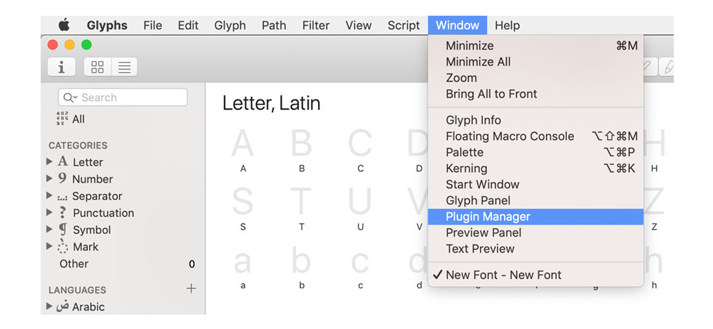
- Open the Glyphs 3 font editor.
- Go to Window > Plugin Manager. A new dialog opens where you can see the plugins, scripts and modules you can add.
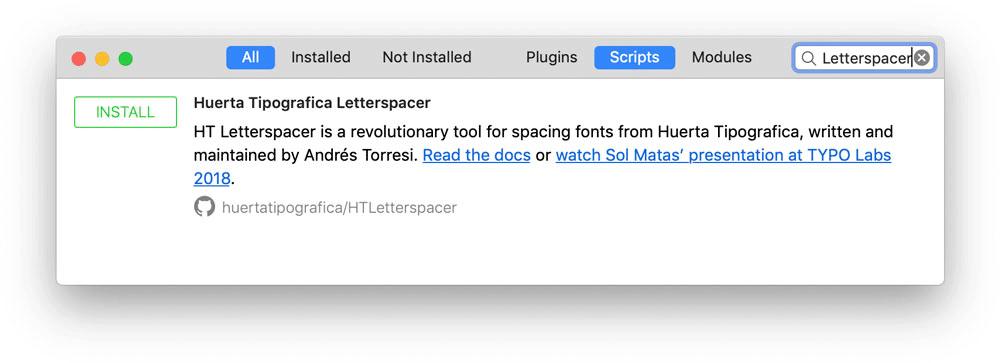
- In the Plugin Manager window, tick the All and Scripts tabs.
- Type Letterspacer in the search field.
- Click INSTALL.
- Close the window.
- Back in Glyphs, hold ⌥ Opt and open the Script menu: instead of "Open Scripts folder" you'll see Reload Scripts at the bottom. That refreshes the scripts and HTLetterspacer appears in the list.
Shortcut: reload the scripts folder with ⌘ Cmd ⌥ Opt ⇧ Shift Y.
What's next
- Define the general parameters.
- Pass those general parameters to each master.
- Develop the particular parameters for specific categories or subcategories.
Using this tool has three stages:
- Trials to define the general parameters.
- Define the general parameters and attach them to each master.
- Define the particular parameters in the configuration file.
Step 02
Initial use
You've started designing your typeface and have a few signs — say, an n, an o, a v and a c. Now you need to design the white that surrounds them: the spacing. This is where you start using the tool.
The first time you go to Script > HTLetterspacer — with its two options, HTLetterspacer UI and HTLetterspacer — this dialog opens:
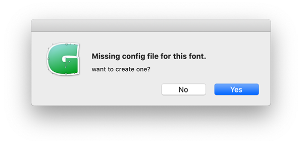
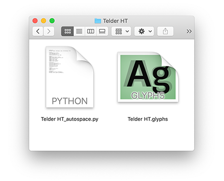
Step 03
An approach to spacing design
In this section I'll talk about spacing design itself and how to use HT Letterspacer to space a typeface. But first, a short introduction to make sure we share a starting point and avoid semantic misunderstandings. (If this doesn't interest you, jump to the next heading.)
Points to define
- What is spacing?
- Which factors should we consider when making spacing decisions?
- What actors take part in the spacing process?
- How are those actors reflected in the parameters HT Letterspacer proposes?
What's new about this tool is that it challenges us to think about spacing differently — and that may be what disorients us at first. It is not a button that fixes everything.
To space is to decide how much space sits to the left and right of a sign, how much air surrounds it: it is designing the white that lets us read the black.
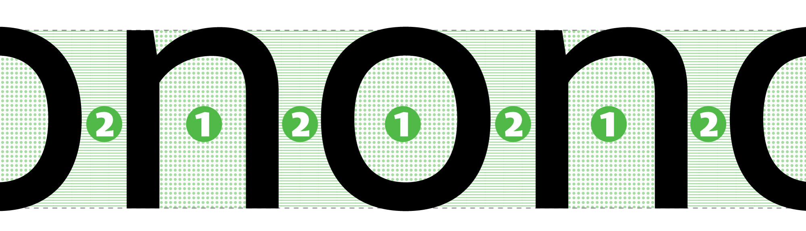
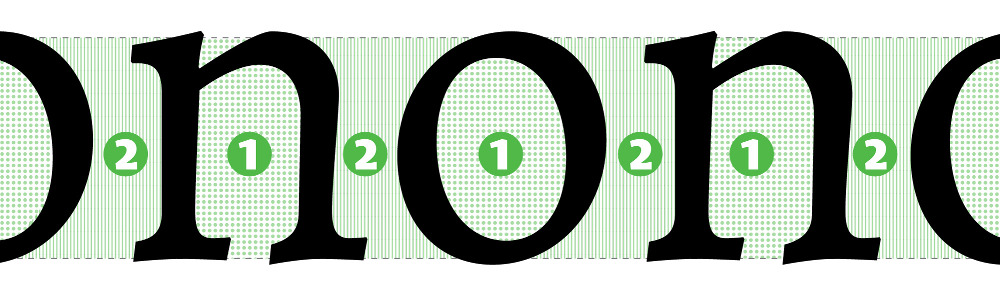
To space is to balance the space inside a letter against the space outside it. On this we mostly agree: matching internal and external whites is a familiar idea. The illustration is similar: if filling the inside of an n takes 1 litre of water, then 1 litre will also fill the space between that n and the next letter. The big question is: is it a litre, 0.8 or 1.2?
The spacing methods proposed by Walter Tracy, Thomas Phinney and Frank E. Blokland focus on form, grouping and classifying shapes into straights, curves, diagonals, stems, and so on.
Andrés Torresi proposes looking at the white instead. The focus is not on form: the attention is on the space, and it invites us to see that space as something we can shape — we have to decide where that white begins and ends, the white that gives way to black.
Sub-section
Design criteria
When you start thinking in broad strokes about how a font's spacing will look, some facts begin to shape that white. These items influence every decision. For example, if I have two sans-serif text faces — one for print and one for screen — the second will have more generous spacing. If I have a text face and a display variant, the display will be tighter.
Factors that can become a spacing design criterion:
- The drawing of the signs, their form.
- Proportions.
- Colour.
- Function.
- Medium.
- Etc.
Sub-section
Technical elements
Once you know what kind of spacing your typeface needs and want to use the spacer, there are four concepts you need to know — just as drawing a sign in a font editor requires understanding Bézier curves, handles and nodes. The main actors in spacing are:
- Sidebearings (left and right).
- Glyph outline.
- Bounding box.
- Advance width.
Sub-section
Glossary
"Space is what happens between the edge of the box and the outline."
The origin point [1] is the zero on the x-axis.
The advance width [2] is how far the sign advances. The left edge is the origin (which coincides with the left sidebearing) and the right edge is the right sidebearing. The advance width is bounded by the left [8] and right [10] edges; what happens between them is the advance [2]. The advance is always greater than or equal to zero.
When I say glyph [3], I mean the drawing (the shape, the black) and the space surrounding it.
When I say outline [4], I mean the line that draws form and counterform — the line that draws the black.
The extreme points of the outline [5] determine the Bounding Box [6] (BBox). In other words, the BBox is the rectangle that circumscribes the outline.
Sidebearing is the essential component of spacing: it is the space on the left and on the right. Each glyph has a left sidebearing — Left Side Bearing — LSB [7] — and a right sidebearing — Right Side Bearing — RSB [9]:
- LSB [7] is the distance between the origin [1] and the left side of the BBox [6].
- RSB [9] is the distance between the right side of the BBox [6] and the right edge of the box [10].
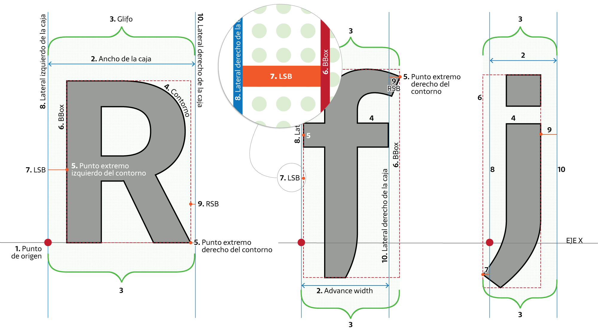
Step 04
Defining the general parameters
To define the parameters, it's best to start with the HT Letterspacer UI popup window. That's where you set the parameters used to design the spacing of a typeface.
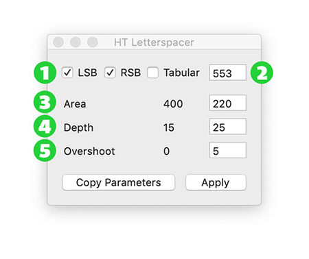
1 · LSB / RSB
Left and right sidebearings. This parameter lets you choose whether to apply values to one or both sides of a sign.
2 · Tabular
This parameter calculates the spacing values but applies them proportionally without modifying the advance width. Useful for tabular figures, monospaced fonts, or recalculating a glyph's position inside its box.
3 · Area paramArea
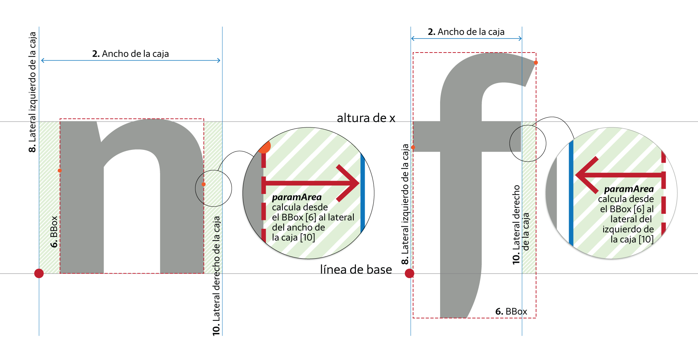
This parameter defines the desired area of space. It is measured in thousands of UPM.
For example: on a rectangular figure (straight, vertical side) 500 UPM tall, every sidebearing unit equals 500 of area — i.e., an area of 500,000 (500) equals a 100-unit sidebearing. For a text typeface at 1000 UPM, the value is typically set between 200 and 400 (not a rule — it depends on what you want).
4 · Depth paramDepth
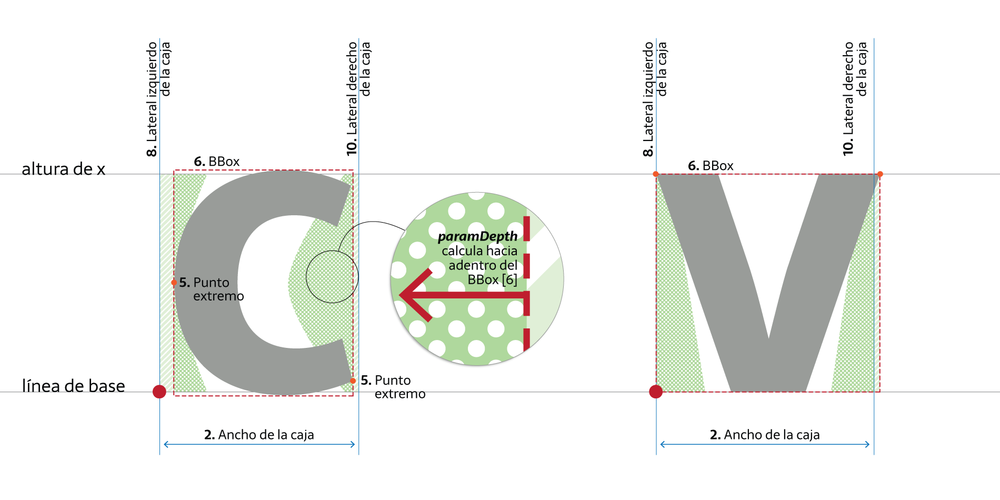
If every sign were as straight as the left side of a geometric sans n, spacing would already be solved and we wouldn't be discussing this. What about open counterforms, the white areas inside the BBox that the area parameter doesn't take into account? How do we define the white surfaces of a c, a v or a T? Where exactly does counterform end and spacing begin?
There's a lot of white inside the BBox that affects how we equalise space. To set this parameter you need a well-trained eye: you must decide a visual boundary. No point or line tells you exactly where the internal white of a c stops being interior space and starts being exterior.
The number used here is a percentage of the x-height (between 0 and 100), and it indicates how far inwards from the BBox the white should be measured, between the vertical limits set. For a typical text face it's often between 10 and 25 (again, only a starting reference).
5 · Overshoot paramOver
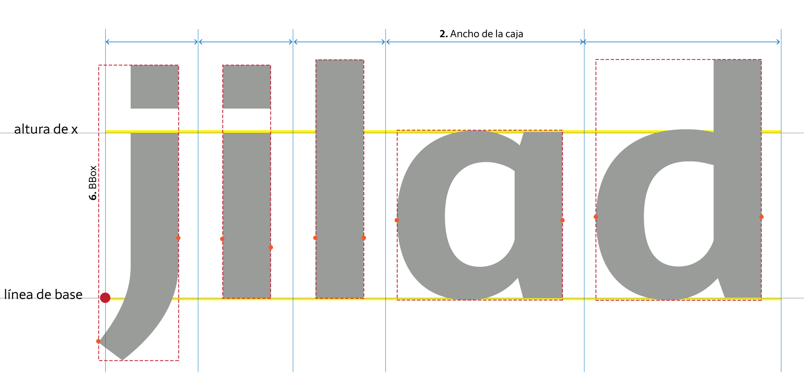
The previous two parameters (area and depth) measure within the glyph's set height (x-height). This parameter extends the measurable space above and below that height.
Including space beyond the vertical limits lets us compute different spacing for a sans i, an l and a j, or for a single-storey a, a d and a q.
By default, for lowercase the measurement zone matches the x glyph — our reference glyph. You can replace that reference for any glyph group in the configuration file (see later). The overshoot extends those values to produce a difference in glyphs with ascenders and descenders.
Once you know which parameter controls which white, you can experiment quickly in this window — trying different values until you find the spacing you want.
We recommend starting with a sequence of n to set the area parameter, then adding o and seeing what happens with the depth parameter as you bring in c, v and other open-counter signs. Finally, check i, j and l to set the overshoot parameter. Soon the sequence becomes words and phrases that let you review details and observe the results of your decisions.
As you'll have noticed, just when you think you've found the paramArea value, adding a v throws everything off; you find paramDepth, then an f breaks it again. Knowing what each parameter changes is what stops it becoming a lottery.
From this preliminary testing of lowercase, uppercase, figures and symbols you'll get even and harmonious spacing — but not optimal. You'll resolve that later with the particular parameters.
The values in the HT Letterspacer UI window are not saved — it's a testing instance. If you work on a multiple-master font and load values for the light master, then go to the bold and change them, returning to light will show the bold values. Work one master at a time and move the parameters from the UI to the corresponding master in master info.
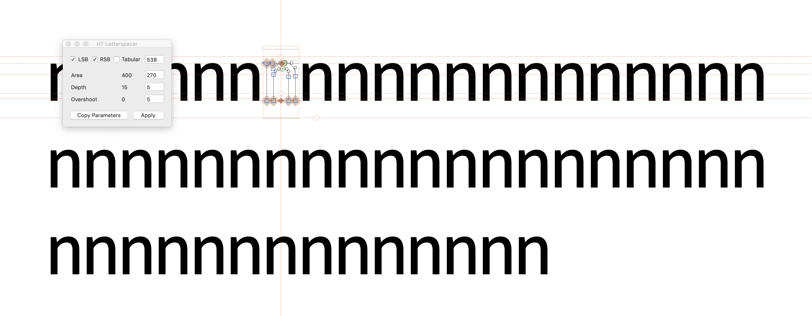
Step 05
Passing values to each master
Once you've defined the values in the popup window, load them into the corresponding master. It's quite simple.
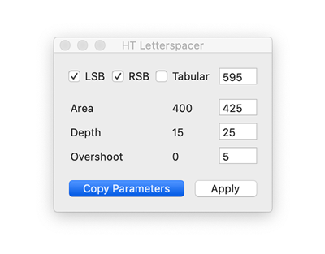
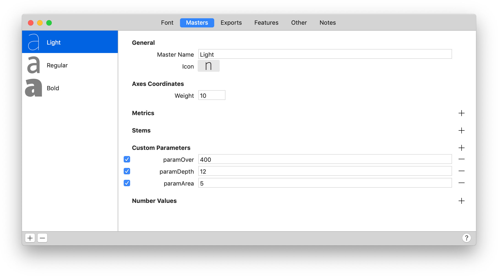
Recap
- To apply the spacer the glyphs must be selected.
- Knowing which parameter corresponds to which white keeps you from working blind and playing the lottery.
- The UI window does not save values. Move the general parameters into each master's info.
- The general parameters are calculated by contrasting lowercase. Other signs will have an even or constant spacing — you'll refine that with the particular parameters.
Keyboard shortcut
You can assign a keyboard shortcut for this tool by going to System Preferences > Keyboard. Select "App Shortcuts" on the left, click the Add button +, click the Application drop-down and choose Glyphs. If it's not listed, choose Other and locate the app using the Open dialog.
In the "Menu Title" field, type the menu command Script→HT_LetterSpacerUI. Click the "Keyboard Shortcut" field, press your desired key combination, and click Add.
Step 06
Applying HT Letterspacer to the whole font
With the spacing parameters copied into every master, you can run the macro across the whole font:
- Select all glyphs.
- Go to Script > HTLetterspacer > HTLetterspacer.
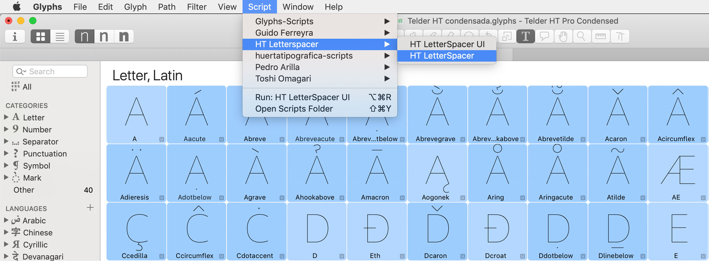
Step 07
Configuration file and particular parameters
As you've read, the general parameters do the spacing by contrasting lowercase. The other categories and subcategories must be adjusted: lowercase will look correct, but uppercase will most likely look tight.
In the initial steps a configuration file was generated. It contains the instructions to solve this problem and adjust the general parameters to the particular needs of each group of signs.
The file lives in the same folder as the font file, named the same plus the _autospace.py extension. Opening it in a text editor (Sublime Text, Visual Studio Code, etc.) you'll see something like:
# Reference
# Script, Category, Subcategory, case, value, referenceGlyph, filter
# Letters
*,Letter,*,upper,2,H,*,
*,Letter,*,smallCaps,1.4,h.sc,*,
*,Letter,*,lower,1,x,*,
*,Letter,*,minor,0.7,m.sups,.sups,
# Numbers
*,Number,Decimal Digit,*,1.5,one,*,
*,Number,Decimal Digit,*,1.2,zero.osf,.osf,
*,Number,Fraction,minor,1.3,*,*,
*,Number,*,*,0.8,*,.dnom,
*,Number,*,*,0.8,*,.numr,
*,Number,*,*,0.8,*,.inferior,
*,Number,*,*,0.8,*,superior,
# Punctuation
*,Punctuation,Other,*,1.5,*,*,
*,Punctuation,Parenthesis,*,1.8,*,*,
*,Punctuation,Quote,*,3,*,*,
*,Punctuation,Dash,*,1.5,*,*,
*,Punctuation,*,*,1,*,slash,
*,Punctuation,*,*,1.2,*,*,
# Symbols
*,Symbol,Currency,*,1.6,*,*,
*,Symbol,*,*,1.5,*,*,
*,Mark,*,*,1,*,*,
# Devanagari
devanagari,Letter,Other,*,1,devaHeight,*,
devanagari,Letter,Ligature,*,1,devaHeight,*,
Pay close attention to this file: it's where the main difference between HT Letterspacer in Glyphs 2 and Glyphs 3 lives.
Glyphs 3 introduces the case parameter, which applies only to the letters category. The other categories follow the same logic as Glyphs 2.
Opening yourfontname_autospace.py in a text editor, you'll see standard values that are just a starting point. The idea is to customise them to your typeface's specific needs.
Just as the general parameters required defining their actors (LSB, RSB, advance width, etc.), here what you need to learn is to read and interpret this file so you can modify it.
The first two lines show the file's structure as a comment (a # starts a non-executing comment). The same sequence repeats in each following paragraph.
The parameters declared are:
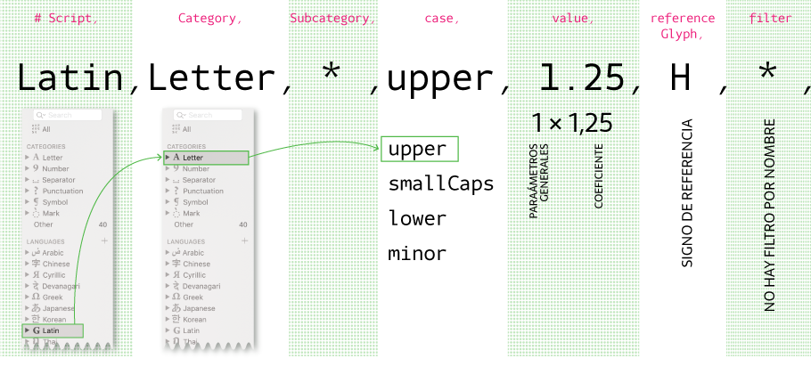
- Script: the writing system affected — latin, devanagari, cyrillic, etc. * means all scripts.
- Category: the category of signs — letters, numbers, punctuation, symbols — or * for all.
- Subcategory: this parameter doesn't apply to letters (see next example).
- case: the case affected within letters — upper, smallCaps, lower, minor, or *.
- value: the coefficient that multiplies the space defined in the general parameters. 1 applies the values unchanged. So for letters, case lower the value is 1; for upper and smallCaps, since spacing needs to be wider, a value greater than 1; and for minor, less than 1.
- referenceGlyph: this reference glyph defines the x-height — the vertical limit for the general parameters. For lowercase it would be an x, for uppercase an H (I say "would be" because you can swap it for another sign). It matters for superscripts and similar signs that sit largely outside x-height: in the Superscript subcategory the reference should be x.sups.
- filter: a text string used to group glyphs and narrow the scope of a rule. E.g. .ss01, ord, or simply *.
So this reads: for all uppercase letters in the Latin script, multiply the value assigned in the general parameters × 1.25, using the H as the height reference.
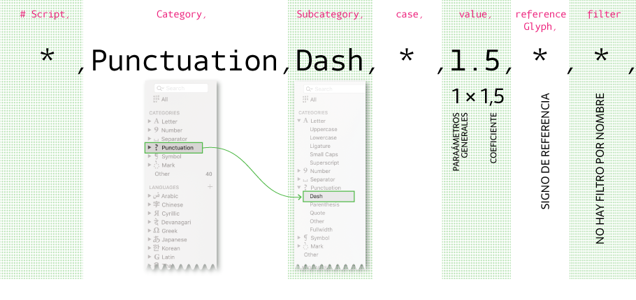
- Script: * means all scripts.
- Category: Punctuation.
- Subcategory: here, Dash. Could be Parenthesis, Quote, Other, Fullwidth, or *.
- case: * affects all.
- value: 1.5 × the value declared in the general parameters.
- referenceGlyph: not declared, so the reference height is the x glyph.
- filter: no filter declared.
So this reads: for all punctuation signs in the Dash subcategory, multiply × 1.5 the spacing value produced by the general parameters.
This list of parameters — Script, Category, Subcategory, case — also shows up in the left column of the main Glyphs window. You can explore them further in Glyph info: select one or more glyphs and go to Edit > Info for Selection or press ⌥ Alt ⌘ Cmd I.
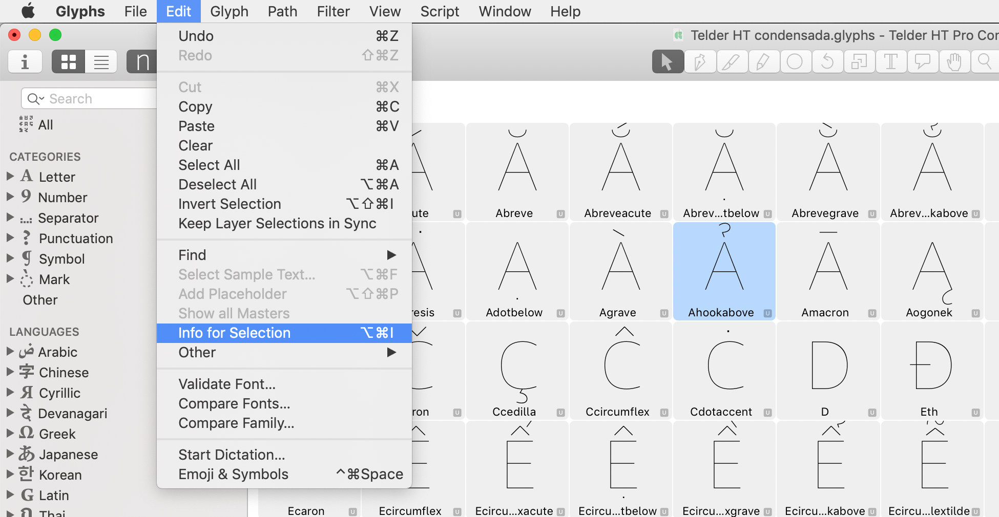
Info for Selection menu" />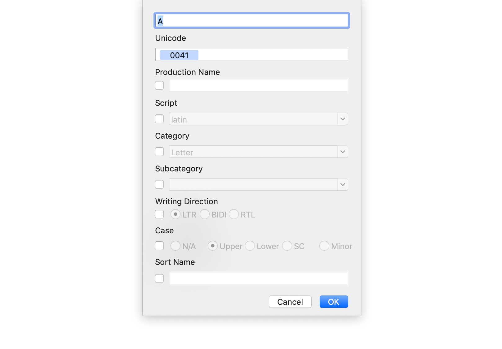
Step 08
Examples
Example 1: you cannot set exceptions.
It's important to note that you cannot exclude signs. One workaround is to simply not select the glyphs you don't want the script to affect when running it across the font.
Another option is to stop thinking of it as an exception and instead include the case via a filter — turn the exception into a particularity inside a category/subcategory.
# Roman numerals
Latin,Letter,*,lower,1.5,RomanNumbersHeight,.ss02,
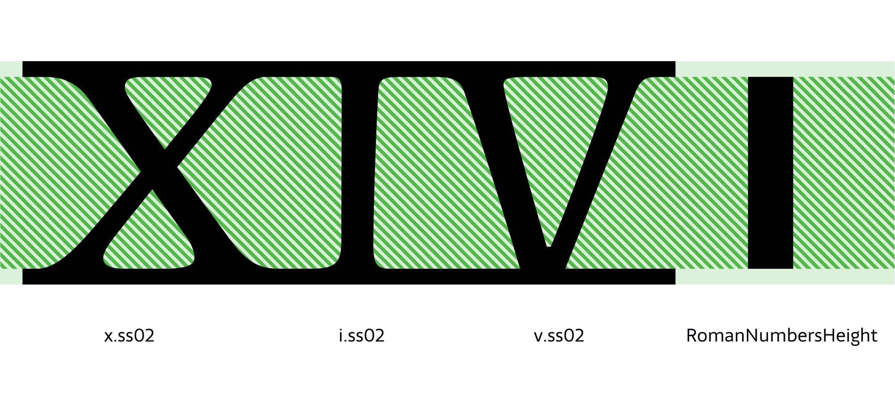
- Latin writing system.
- Letter category.
- * all subcategories.
- case lower — the lowercase.
- 1 value.
- RomanNumbersHeight reference glyph: redefines the measurable x-height.
- ss02 filter: the exception is included as a particularity inside a group.
Example 2:
Latin,Letter,*,Uppercase,1.25,H,*,
Latin,Letter,*,Uppercase,1.4,H,E,
Look at the first line: the filter value is *. On the second line it's E. This reads: all uppercase letters use H as the reference, and 1.25 as the coefficient — but the second line overrides that for the E filter, raising it to 1.4. (Like OpenType, later rules override earlier ones.)
Understanding this step is fundamental to getting the most out of the tool. Here, the choice of script, categories, subcategories, filters and reference glyphs becomes essential for designing the fine adjustments that resolve every detail.
The configuration file is not a rigid formula — it's open to each designer's creativity. Multiplying parameters doesn't always give the expected result, but you can go back, redefine the general parameters, declare new categories or subcategories, choose new reference glyphs or filters, and arrive at the spacing you want.
It's a tool that invites you to think about space from the white outwards — from the general to the particular.
Step 09
FAQ
Do I need a separate configuration file for each master?
The configuration file provides the coefficient that multiplies the general parameters of each master. You need the general parameters copied into every master and a single configuration file.
Do the sidebearings need to be zero?
No. You don't need sidebearings set to zero to use HT Letterspacer — the tool replaces whatever values you put manually.
What happens to spacing rules?
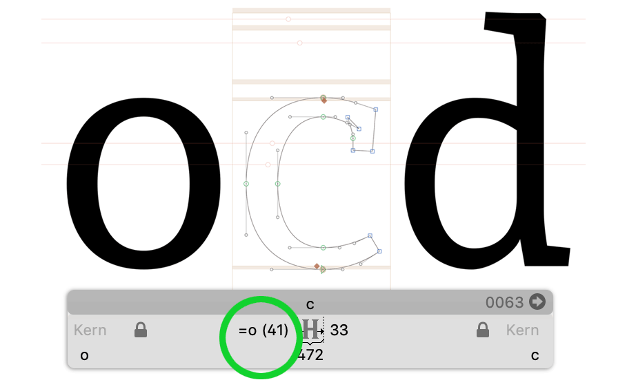
What about kerning?
HT Letterspacer is not a tool for kerning a typeface. We strongly recommend reviewing the kerning once spacing is resolved.
Step 10
Related links
Step 11
Bibliography
- El trazo. Teoría de la escritura. Gerrit Noordzij. Translation by Carlos García Aranda. 2009. Campgràfic Editors.
- Espaçamento de fontes, Eduardo Novais
- FreeType Glyph Conventions: I Basic Typographic Concepts
- FreeType Glyph Conventions: II Glyph Outlines
- FreeType Glyph Conventions: III Glyph Metrics
- Hacer y Componer, Francisco Gálvez Pizarro, Ediciones UC, Chile, 2018.
- How to Space a Font. FontLab Studio 5 tutorial with Thomas Phinney.
- I Love Typography, Typography Terms (S)
- The Elements of Typographic Style, version 3.1, Robert Bringhurst.
- LS Cadencer Tools, Frank E. Blokland
- On the Origin of Patterning in Movable Latin Type
- Stan Nelson: Making Type
Credit
By Carolina Giovagnoli — Revised Sep. 2021
Update 2019-06-07: a few text issues fixed thanks to Yolmar Campos.
Update 2026-05-21: redesign and a few corrections.
If you want to help sustain this project, you can donate any amount.